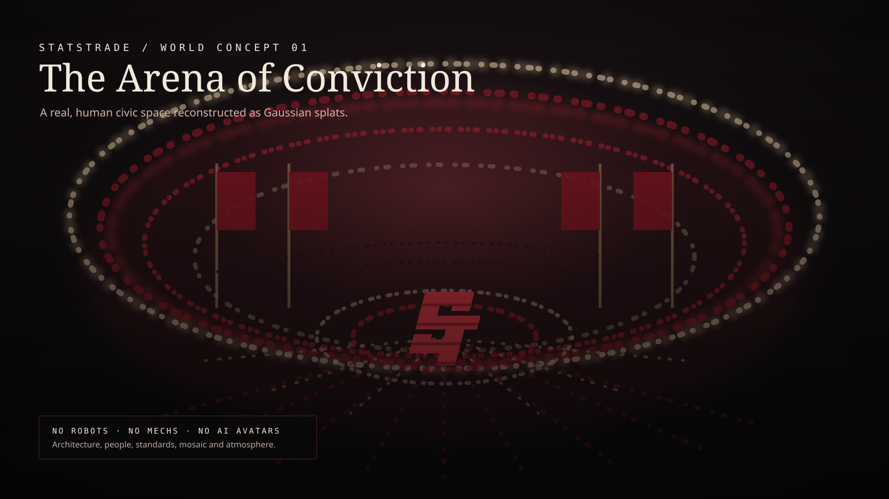

r/AFL · posted by u/outerwing · 3m
LiveDoes Carlton score the next goal before the 12-minute mark?
The territory has shifted, but the last two exits have both been intercepted. The crowd is moving hard toward yes.
YES67+11 in 4 min
Home feed
r/AFL · posted by u/outerwing · 3m
LiveThe territory has shifted, but the last two exits have both been intercepted. The crowd is moving hard toward yes.
r/Formula1 · posted by u/sectorpurple · 19m
Track evolution is hiding the actual tyre delta. Here is the lap-by-lap case and where I think the market is wrong.
r/NBA · resolved 41m ago
Resolved
Statstrade / World